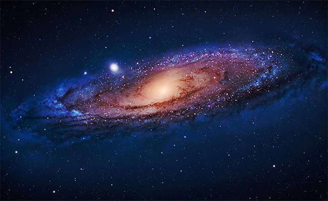
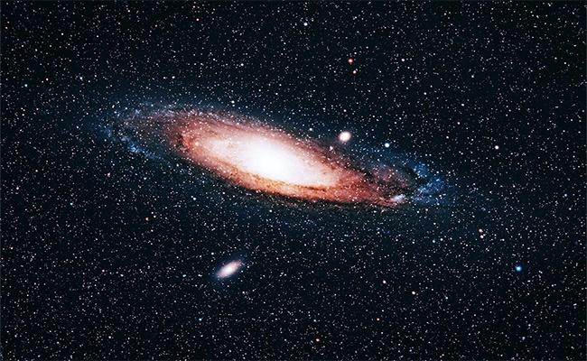
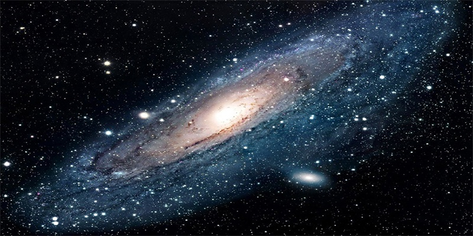

История наблюдений

Первое письменное упоминание о галактике Андромеды содержится в «Каталоге неподвижных звезд» персидского астронома Ас-Суфи (946 год), описавшего её как «маленькое облачко». Первое описание объекта, основанное на наблюдениях с помощью телескопа, было сделано немецким астрономом Симоном Мариусом в 1612 году. При создании своего знаменитого каталога Шарль Мессье внёс объект под определением M 31, ошибочно приписав открытие Мариусу. В 1785 году Уильям Гершель отметил слабое красное пятнышко в центре M 31. Он считал, что галактика представляет собой ближайшую из всех туманностей, и вычислил расстояние до неё (совершенно не соответствующее действительности), эквивалентное 2000 расстояний между Солнцем и Сириусом.
В 1864 году Уильям Хаггинс, наблюдая спектр M 31, обнаружил, что он отличается от спектров газопылевых туманностей. Данные указывали на то, что M 31 состояла из множества отдельных звёзд. Исходя из этого, Хаггинс предположил звёздную природу объекта, что в последующие годы и подтвердилось.
Общие характеристики

Галактика Андромеды, как и Млечный Путь, принадлежит к Местной группе, и движется по направлению к Солнцу со скоростью 300 км/с, таким образом, она относится к объектам, имеющим фиолетовое смещение. Определив направление движения Солнца по Млечному Пути, астрономы выяснили, что галактика Андромеды и наша Галактика приближаются друг к другу со скоростью 100—140 км/с. Соответственно, столкновение двух галактических систем произойдёт приблизительно через 3-4 миллиарда лет. Если это произойдёт, они обе, скорее всего, сольются в одну большую галактику. Не исключено, что при этом наша Солнечная система будет выброшена в межгалактическое пространство мощными гравитационными возмущениями. Разрушения Солнца и планет, вероятнее всего, при этом процессе не произойдёт.
Согласно опубликованным в сентябре 2014 года данным, по одной из моделей, через 4 млрд лет Млечный Путь «поглотит»Большое и Малое Магеллановы Облака, а через 5 млрд лет сам будет поглощён Туманностью Андромеды.
Движение галактики и ее спутники

Все во Вселенной взаимосвязано и находится в движении — это не философская сентенция, но банальный вывод из известных принципов гравитации. Галактика Андромеды также не стоит на месте. Разные ее части движутся с разной скоростью. Возле ядра звезды и газ вращаются со скоростью 225 км/сек, а на отдалении в 7 тысяч световых лет — 50 км/сек. Разгоняет объекты сосредоточение массы ядра — тяжелые звезды и сверхмассивная черная дыра, традиционное сердце галактики.
Первый снимок галактики Андромеда. Спутник М110 виден в верхней части, М32 — справа.
Первый снимок галактики Андромеда. Спутник М110 виден в верхней части, М32 — справа.
Также галактика Андромеда приводит в движение другие «звездные острова», конкретно — 14 карликовых галактик-спутников. Самые большие из них — М32 и М110 — без труда видны в телескоп, благодаря чему были открыты еще в XVIII веке. Также ученые подозревают, что именно М32 пробила «арку» в диске Андромеды. Еще Андромеда регулярно их поглощает — некоторые шаровые скопления светил в гало «звездного острова», которые отделены от общего звездного диска, являются остатками ядер поглощенных галактик.

Факт № 1: найти её проще, чем другие галактики
И это не только по тому, что она ближайшая: прекрасный ориентир – созвездие Андромеды, сложенное из довольно ярких звёзд. Ищем одноимённое созвездие, запоминаем, где находится звезда Мирах, от неё ещё две звезды будут уходить вверх, и рядом со второй верхней звездой вы увидите маленькое туманное облачко – именно оно и есть галактика Андромеды. Созвездие Андромеды находится рядом с созвездиями Персея и Кассиопеи – они более яркие, и поиски можно даже начать с них. Желательно искать галактику, будучи за городом, в местности, где нет засветки, и когда на небе не будет Луны. Лучшие условия для наблюдений – август, а также осенние и зимние месяцы.
Факт №2: большая свита
С Андромедой гравитационно связаны 14 мелких галактик-спутников, наиболее яркие из них – М 32 и М 110.
Факт № 3: Млечный Путь – малыш по сравнению с Андромедой
Приблизительный диаметр галактики Андромеда составляет 220 000 световых лет, что более чем в два раза больше Млечного Пути (100 000 – 120 000 световых лет). Андромеда – настоящая королева: это самая большая галактика в местной группе (а их «на районе» более 50).